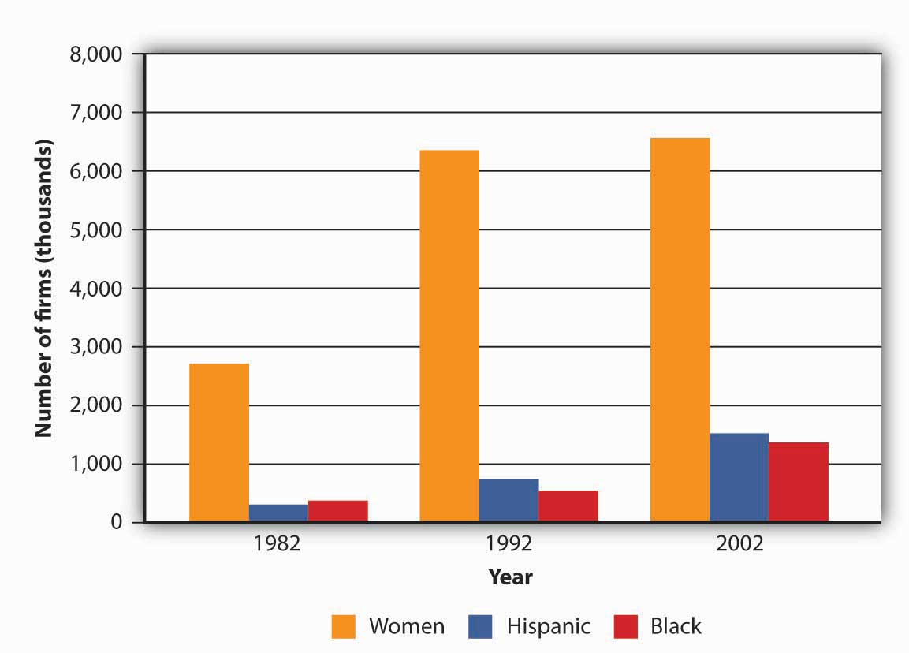

To assess the value of small businesses to the U.S. economy, we first need to know what constitutes a small business. Let’s start by looking at the criteria used by the Small Business Administration. According to the SBA, a small businessAccording to the SBA, a business that is independently operated, exerts little influence in its industry, and employs fewer than five hundred people. is one that is independently owned and operated, exerts little influence in its industry, and (with a few exceptions) has fewer than five hundred employees.U.S. Small Business Administration, “What Is Small Business?” (2008), http://www.sba.gov/services/contractingopportunities/sizestandardstopics/size/index.html (accessed October 9, 2008).
Small business constitutes a major force in the U.S. economy. There are nearly twenty-seven million small businesses in this country, and they generate about 50 percent of our gross domestic product (GDP).Office of Advocacy, U.S. Small Business Administration, The Small Business Economy for Data Year 2006: A Report to the President (December 2007), http://www.sba.gov/advo/research/sb_econ2007.pdf (accessed October 9, 2008). Indeed, if all the small businesses in the United States seceded and formed their own economy, it would be the third-largest economy in the world (behind the United States itself and China).Thomas W. Zimmerer and Norman M. Scarborough, Essentials of Entrepreneurship and Small Business Management, 5th ed. (Upper Saddle River, NJ: Pearson Education, 2008), 27. The millions of individuals who have started businesses in the United States have shaped the business world as we know it today. Some small business founders like Henry Ford and Thomas Edison have even gained places in history. Others, including Bill Gates (Microsoft), Sam Walton (Wal-Mart), Steve Jobs (Apple Computer), Michael Dell (Dell, Inc.), Steve Case (AOL), Pierre Omidyar (eBay), and Larry Page and Sergey Brin (Google), have changed the way business is done today. Still millions of others have collectively contributed to our standard of living.
Aside from contributions to our general economic well-being, founders of small businesses also contribute to growth and vitality in specific areas of economic and socioeconomic development. In particular, small businesses do the following:
In addition, they complement the economic activity of large organizations by providing them with components, services, and distribution of their products.
Let’s take a closer look at each of these contributions.
The majority of Americans first entered the business world by working for small businesses, and today, more than half of all U.S. adults either are self-employed or work for businesses with fewer than five hundred employees.Terry Bibbens, “A New View of Government, University, and Industry Partnerships” (U.S. Small Business Administration, Office of Advocacy, February 2000), 2, http://www.sba.gov/advo/laws/test99_0804.pdf (accessed October 10, 2008). These enterprises are constantly creating jobs and providing opportunities for a vast number of workers. Figure 5.3 "Net New Jobs by Firm Size, 1992–1996" shows just how many jobs were created by small (and very small) firms between 1992 and 1996, the last year for which there are data on the actual number of jobs created by small firms. In the decade between 1995 and 2005, small businesses also created 60 percent to 80 percent of net new jobs annually, including 40 percent of high-tech workers (scientists, engineers, computer workers). Their share of total employment remains steady at about 51 percent, because many small firms, as they add employees, naturally grow into large firms.Terry Bibbens, “A New View of Government, University, and Industry Partnerships” (U.S. Small Business Administration, Office of Advocacy, February 2000), 2, http://www.sba.gov/advo/laws/test99_0804.pdf (accessed October 10, 2008), 3.
Figure 5.3 Net New Jobs by Firm Size, 1992–1996

Given the financial resources available to large businesses, you’d expect them to introduce virtually all the new products that hit the market. According to the SBA, however, 40 percent of all U.S. corporate patents come from small businesses, self-employed inventors, and inventors working for small companies.CHI Research Inc., “Small Serial Innovators: The Small Firm Contribution to Technical Change” (U.S. Small Business Administration, Office of Advocacy, March 2003), 11, http://www.sba.gov/advo/research/rs225tot.pdf (accessed October 10, 2008). Over the years, the list of important innovations by small firms has included the airplane and air-conditioning, the defibrillator and DNA fingerprinting, oral contraceptives and overnight national delivery, the safety razor, strobe lights, and the zipper.William J. Baumol, “Small Firms: Why Market-Driven Innovation Can’t Get Along without Them” (U.S. Small Business Administration, Office of Advocacy, December 2005), table 8.1, 186, http://www.sba.gov/advo/research/sbe_05_ch08.pdf (accessed October 10, 2008).
Small business owners are also particularly adept at finding new ways of doing old things. In 1994, for example, a young computer-science graduate working on Wall Street came up with the novel idea of selling books over the Internet. During the first year of operations, sales at Jeff Bezos’s new company—Amazon.com—reached half a million dollars. In less than ten years, annual sales had topped $3 billion. Not only did his innovative approach to online retailing make Bezos enormously rich, but it also established a viable model for the e-commerce industry.
Why are small businesses so innovative? For one thing, they tend to offer environments that appeal to individuals with the talent to invent new products or improve the way things are done. Fast decision making is encouraged, their research programs tend to be focused, and their compensation structures typically reward top performers. According to one SBA study, the supportive environments of small firms are roughly thirteen times more innovative per employee than the less innovation-friendly environments in which large firms traditionally operate.William J. Baumol, “Small Firms: Why Market-Driven Innovation Can’t Get Along without Them” (U.S. Small Business Administration, Office of Advocacy, December 2005), http://www.sba.gov/advo/research/sbe_05_ch08.pdf (accessed October 10, 2008), 187.
The success of small businesses in fostering creativity has not gone unnoticed by big businesses. In fact, many large companies have responded by downsizing to act more like small companies. Some large organizations now have separate work units whose purpose is to spark innovation. Individuals working in these units can focus their attention on creating new products that can then be developed by the company.
Small business is the portal through which many people enter the economic mainstream. Business ownership allows individuals, including women and minorities, to achieve financial success, as well as pride in their accomplishments. While the majority of small businesses are still owned by white males, the past two decades have seen a substantial increase in the number of businesses owned by women and minorities. Figure 5.4 "Businesses Owned by Women and Minorities" gives you an idea of how many American businesses are owned by women and minorities, and indicates how much the numbers grew between 1982 and 2002, the last year for which there are reliable data.Ying Lowrey, “Women in Business, 2006: A Demographic Review of Women’s Business Ownership” (U.S. Small Business Administration, Office of Advocacy, August 2006), http://www.sba.gov/advo/research/rs280tot.pdf (accessed October 10, 2008); Ying Lowrey, “Minorities in Business” (U.S. Small Business Administration, Office of Advocacy, April 2007), http://www.sba.gov/advo/research/rs298tot.pdf (accessed October 10, 2008).
Figure 5.4 Businesses Owned by Women and Minorities
Small firms complement large firms in a number of ways. They supply many of the components needed by big companies. For example, a substantial portion of the mind-boggling $90 billion paid annually by General Motors to parts suppliers goes to small businesses. Small firms also provide large ones with such services as accounting, legal, and insurance. Many small firms provide outsourcing services to large firms—that is, they hire themselves out to help with special projects or handle certain business functions. A large firm, for example, might hire a small one to handle its billing or collection services or to manage its health care benefits. A large company might contract with a small information technology firm to manage its Web site or oversee software upgrades.
Small companies provide another valuable service to large companies by acting as sales agents for their products. For example, automobile dealerships, which are generally small businesses, sell vehicles for the big car makers. Local sporting goods stores sell athletic shoes made by industry giants, such as Adidas and Nike. Your corner deli sells products made by large companies, such as Coca-Cola and Frito-Lay.
The nearly twenty-seven million small businesses in the United States generate about 50 percent of our GDP. They also contribute to growth and vitality in several important areas of economic and socioeconomic development. In particular, small businesses do the following:
How “small” is a small business? If a substantial portion of small businesses in the United States suddenly closed, what would be the impact on the U.S. economy? How would all these closings affect workers, consumers, and other businesses?